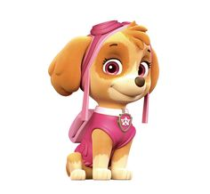
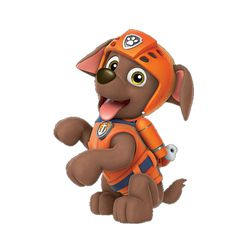

1) Chase, a serious police pup.
2) Skye is a fearless and smart Cockapoo who loves to fly in her helicopter or with the wings in her pup pack. She tries everything with a backflip, grace, and a smile.
3) Rocky is a Schnauzer/Scottish Terrier mix who is the recycler pup of the PAW Patrol, one of the five tritagonists of the Canadian cartoon series PAW Patrol and one of the five tetartagonists of PAW Patrol: The Movie, and one of the main characters of its sequel PAW Patrol: The Mighty Movie.
4) Zuma is all about the water! This Chocolate Labrador loves to laugh and surf. He lives in his boathouse and dives into action in his hovercraft. Zuma has lots of energy for any adventure in store for him!
4) Marshall is a Dalmatian who is the firefighter and the medical pup of the PAW Patrol, one of the five tritagonists of the Canadian cartoon series PAW Patrol, one of the five tetartagonists of PAW Patrol: The Movie, and one of the main characters of its sequel PAW Patrol: The Mighty Movie.
5) Rubble, a construction pup with a sweet tooth.
6) Mayor Goodway, Voiced by Ron Pardo, Mayor Humdinger often clashes with Mayor Goodway, but he has never posed a serious threat to the citizens of Adventure Bay.